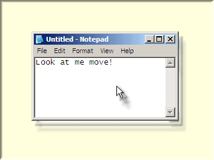

Welcome to the Taekwindow web page
Taekwindow is a simple, lightweight and free program that allows you to manipulate floating windows in Microsoft Windows in a way similar to many X11 window managers. It allows you to do the following:
- move windows by grabbing them anywhere (not just the title bar) while holding the Alt key, and then dragging with the left mouse button;
- resize windows by grabbing them anywhere (not just the tiny little border) while holding the Alt key, and then dragging with the right mouse button.
Especially when you have a large screen, you're moving your mouse much more than you ought to. Taekwindow can save you time, frustration and RSI!
The program is released under the BSD licence, which means that it is free as in speech as well as in beer. Download it now!